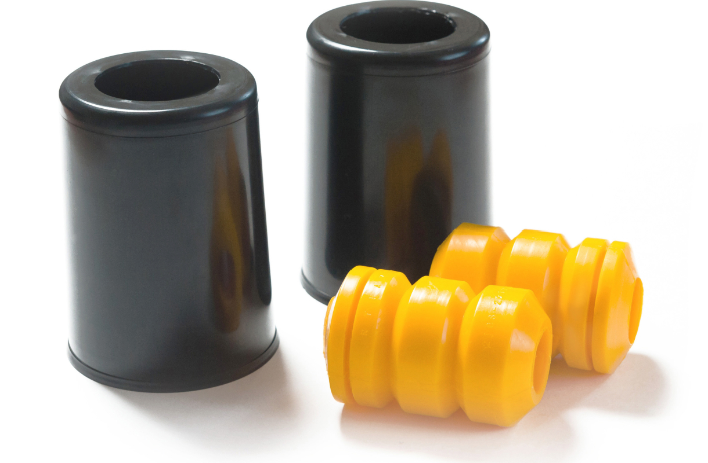
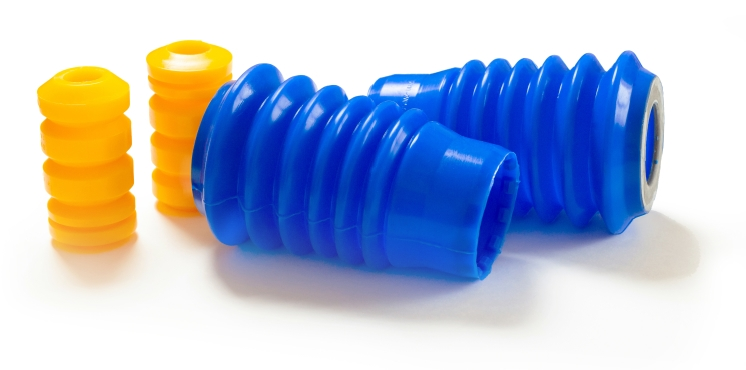
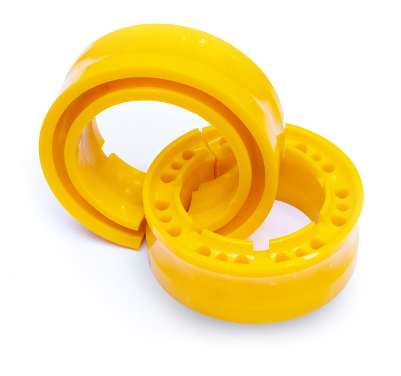
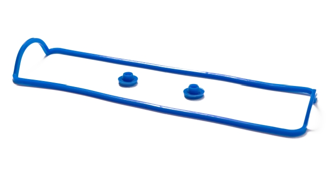

Отбойники передних стоек с пыльниками LADA 2114
- Применяемость для автомобилей
- LADA 2108-21099, 2113-2115 Samara
- Art: 2108-2912816 /1118-2902814
- Материал: термопластичный полиуретан
- Колличество деталей: 4 шт
Долговечность элементов подвески
Отличительной особенностью отбойников РУССКИЙ ПОЛИУРЕТАН ™ является яркий желтый цвет и доступная цена. Изготавливаются изделия из материала "Эпалан" твердостью по Шору, 55-60 шкала А. Данный материал соответствует нормативам циклической долговечности элементов подвески, показывает хорошие характеристики сжатия и ударной энергоемкости. Дополнением к комплектам отбойников идут защитные пыльники стоек амортизатора. По желанию заказчика пыльники могут быть изготовлены из РТИ, силиконовых смесей, ПВХ (пластиковые защитные кожухи).

Отбойники передних стоек с пыльниками LADA 2110
- Применяемость для автомобилей
- LADA 2110-2112, 2170 Priora
- Art: 2110-2902816 / 2110-2905681
- Материал: термопластичный полиуретан
- Колличество деталей: 4 шт
Эффект пневмоподвески
Благодаря автобафферам амортизаторы автомобиля реже пробиваются, срок службы увеличивается. Удобнее парковаться у бордюров. Клиренс возрастает примерно на 2 см. При проезде лежачих полицейских и при резких торможениях автомобиль меньше "клюёт" передом.
Уменьшаются крены и раскачка автомобиля, снижается валкость на поворотах. При использовании на задних пружинах увеличивается грузоподъемность автомобиля.

Автобаффер
- Диаметр: 100-120 мм
- Применяемость для автомобилей
- LADA 2108-21099, 2110-2112, Kalina,
- Priora, Granta, Vesta,X-Ray, Largus, иномарки
- Art: 2108-2910000
- Диаметр: 120-140 мм
- Применяемость для автомобилей
- LADA 2101-21073, 2121 Niva,
- 2123 Niva Chevrolet, иномарки
- Art: 2101-2910000
- Материал: термопластичный полиуретан
- Колличество деталей: 2 шт
Выдерживают критические температуры
Силиконовые каучуки сохраняют свои свойства даже при критически высоких температурах, что кардинально отличает их от оригинальных резиновых. Для проверки качества мы тестируем их в нестандартных экстремальных условиях, которые возникают при потере масла или охлаждающей жидкости в узлах автомобиля.

Прокладка клапанной крышки LADA 2114
- Применяемость для автомобилей
- LADA 2108-21099, 2110-2112, Samara, Kalina,
- Priora, Granta, Largus
- Art: 2108-1003270 / 2108-1003277
- Материал: силикон
- Количество деталей: 3 шт